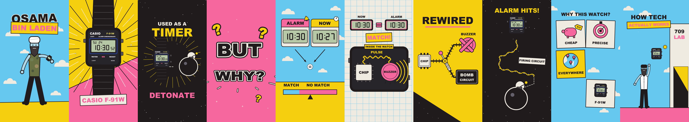
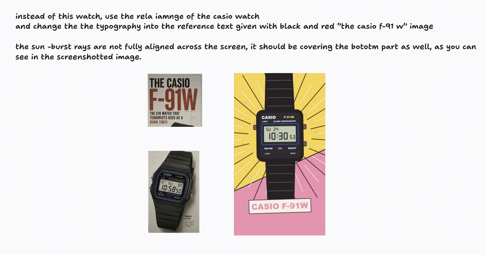
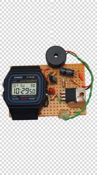
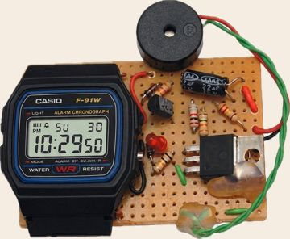
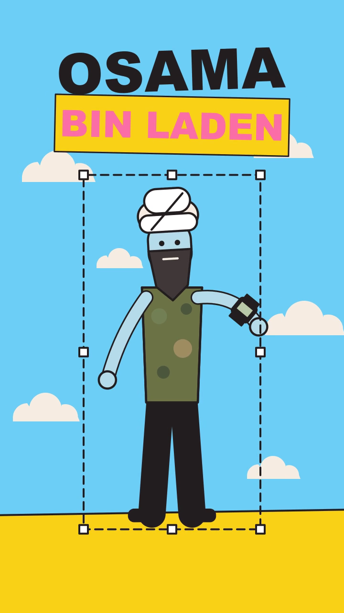
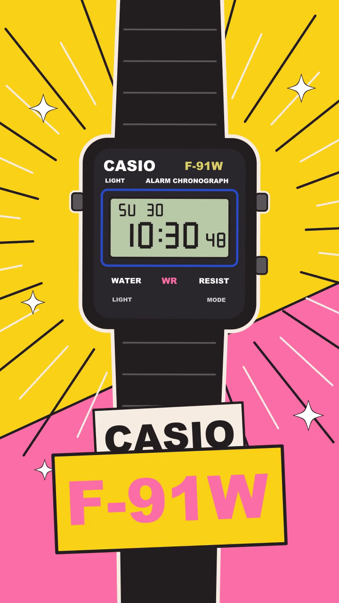
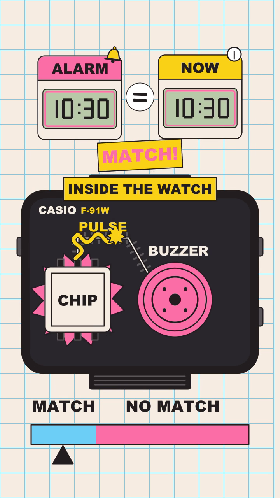
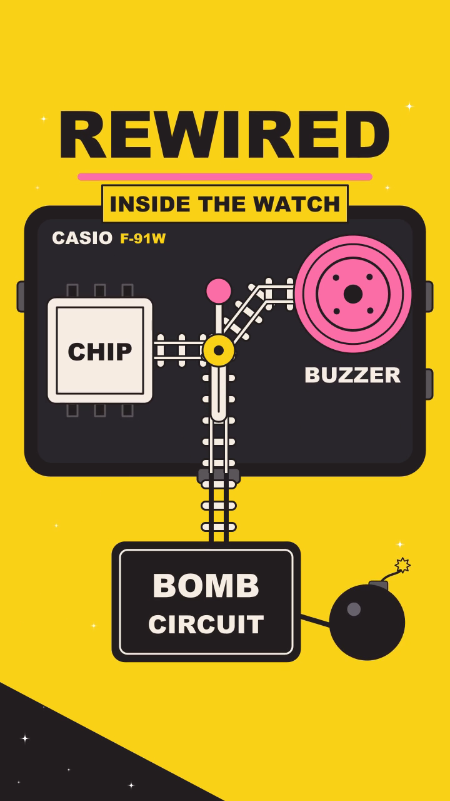

How one prompt
became an animated
reel
The Casio F-91W case study: from an Instagram voice-over to a 48.5-second flat 2D animation, and on to an After Effects project.
Same voice. A whole new film.
One evening. Five versions.
Sources: the casebook and chat logs in the case-study folder. Cost is the AI's own estimate from token usage at API rates, not an invoice. Times are IST, 24–25 Sep 2026.
Direct it like an editor.
What "agentic" means
A tiny studio made of programs.
The brief
"Explain it back first." Exercise 1
Build → v1
10 helpers at once. Check-ins. Cost.
Critique → v2
Loops, judges, and taste.
Feedback → v3
Screenshots beat paragraphs. Exercise 2
Versions → v4
Side-by-sides and handoffs. Exercises 3 & 4
After Effects
809 layers you can open.
Live + your turn
A new clip, built in the room. Quiz.
A live build runs in the background all session: we start it after the brief and check on it at each stop.
A chatbot talks.
An agent does the job.
Chatbot
- You ask, it answers in text.
- You do the work in your apps.
- It can't see your files or your render.
Agent (Claude Code)
- Works inside a folder on your computer.
- Downloads, writes files, runs programs, renders video.
- Looks at its own output and tries again.
Agentic AI = an AI that takes actions in a loop: plan → do → check → fix, until the job is done or it needs you.
A tiny animation studio made of programs
Listen
Whisper writes down every word with its timing.
Study the look
Stills, sampled colours, line widths → a style guide.
Brushes
One shared "toolkit": palette, clouds, rays, pops, type.
Scenes
One small program per spoken beat. 10 in all.
Render
12 pictures a second, 582 PNG frames.
Assemble
ffmpeg joins frames + the original voice-over.
Critique
Helpers check stills, fix, re-check. A judge scores.
Your notes
Annotated screenshots and real photos.
Versions
Save vN, make a side-by-side with the last one.
Hand off
Write the context down so a new session can continue.
Instead of dragging keyframes, the AI writes instructions like "draw a pink circle here, make it pop at 7.5 s". A render engine turns them into pictures. All 582 frames re-render in about 3 seconds.
Words you'll hear today
Prompt
What you type to the AI. Short, specific, with links and screenshots.
Agent / sub-agent
A helper copy of the AI with one job, like "animate scene 5". Several run at once.
Render engine
The program that turns drawing instructions into pictures. Here: pycairo.
Python
A programming language. Each scene is a short Python file. You never edit it.
Frame / fps
One still picture / how many per second. This reel: 12 drawn, delivered at 25.
ffmpeg
A free video tool that joins frames into an MP4, adds audio, builds side-by-sides.
Full list: 05_handouts/glossary.md
Two videos, two different jobs
Source = what to say and when. Reference = only how it should look. Say which is which.
The first prompt was messy
Settings typed first: /model → Opus 5.5 (1M context) · /effort → ultracode. Two minutes later: "You have ultracode mode… keep going… but you only have 30 minutes."
"Explain to me what you
understood first."
What came back in 11 seconds
- Source = script + audio. Reference = the look only.
- A plan: transcribe → transliterate → study the style → storyboard → build.
- 3 questions: real video or storyboard? Original voice-over? Full length or best 15–20 s?
What the transcript revealed
- Whisper found the reel is English only, no Hindi.
- So "transliteration" was just the same text in Roman script.
- Caught before any real money was spent.
Rule: make it prove it understood before it builds. A misunderstanding then costs one message, not an hour.
Rewrite the messy brief
Your job
- Take the first prompt (previous slide).
- Rewrite it so a stranger could run with it.
- Use the 7 slots on your worksheet.
- Keep "explain it back first" at the end.
The 7 slots
- Source + its role · Reference + its role
- What to animate · Language
- Format and length · Real assets
- Anything to avoid · then: explain first, wait for OK
Worksheet: 04_exercises/ex1_write_a_clear_brief.md
Switch to
the terminal
A new short clip, brief template 01, and the rule we just learned: it has to explain its plan and wait for our OK.
Script: 07_live_demo_script.md · Fallback: play 06_media/videos/v0_draft.mp4
v0: ten helpers animating at once
- Built a shared toolkit of "brushes": sampled palette, outlines, easing, clouds, sparkles, rays, a flat Casio watch.
- Launched 10 scene agents in parallel plus a style-guide writer.
- 8 agents stopped on "credit balance is too low". The missing scenes were re-run.
- Spotted a black bomb on a black sky and gave it a cream halo.

One frame per scene, s01 → s10
v1: exact colours, thinner lines
- Palette nudged to the exact colours sampled from the reference: sky #6CCEF6, pink #FB6DA6, yellow #F9D117, ink #231E1F, cream #F6EDE2.
- Outline width 5 → 4 px.
- A polish run started, then got interrupted.
- Draft and v1 look almost the same, and that's fine. Small steps are easy to check.
Ask for the real video, with sound
- Previews first came as a GIF and a browser animation. You wanted the MP4 in QuickTime.
- "How much have you spent?" The AI's estimate: about $14.22 by v1 in API terms. That's an estimate, not a bill. Check
/costor your billing page. - Most expensive phase: a polish run whose fixes never made it into the video.
The agents keep
working. You don't.
The live build is running in the background. We'll check on it right after the break.
"Did you critique it against
the exact style?"
Its honest answer
- No. Only 2 of 10 scene critiques had finished.
- It corrected an earlier claim that all 10 were saved.
- Its own rating of v1: about 6/10 on style match.
- Scene 2 scored 6.5, scene 4 scored 5.5.
What it proposed
- Critique → fix → verify for every scene.
- A continuity check across cuts.
- Cost guess for the round: about $6–10 (an estimate).
- Then: "Should I start it?"
You replied: "Now continue and finish the rest of the pending tasks. Spawn multiple sub-agents if required to finish faster."
v2: critic → fixer → verifier → judge
- 42 helper agents. For each scene one critiques stills, one fixes, one re-checks. Scenes 3, 4, 5, 6 and 10 needed a second fix.
- Continuity pass: 8 problems at scene cuts fixed. Outlines down to 3 px.
Style judge: 6.5 / 10
Gaps: characters off-model, text-heavy infographics, no grain, no ink line on colour splits, flat grid.
A score is not taste. Useful as a gap list. Your notes decide what matters.
Screenshots beat paragraphs



Each image = a frame of v2 + what to use instead + a few words. Plus a photo folder: "pick the images from here".
v3: your notes, applied everywhere
- 8 agents, one per affected scene.
- Every photo cut out with a transparent background (Apple Vision). The wrist photo is clipped inside the dotted box.
- A real F-91W photo with a live, ticking LCD in every scene.
- Real circuit photo as still "proof". "THE CASIO / F-91W" type, full-screen rays.


Your photo → the AI's cut-out (a photo whose background has been removed)
Turn a vague note into a screenshot note




Vague note: "The watch looks fake and the start is weird. Make it more real." → Pick one frame. Circle, arrow, 1–2 lines: where · what's wrong · what instead.
Keep every version. Compare pairs.
| File | Shows |
|---|---|
| 00_source_vs_v1 | original vs v1 |
| 01_draft_vs_v1 | v0 vs v1 |
| 02_v1_vs_v2 · 03_v2_vs_v3 | each polish step |
| 04_source_vs_v3 · 05_v3_vs_v4 | original vs v3 · the last step |
Older on the left, newer on the right, newer audio. Never overwrite a released version.
Write the context down, then switch
"Write all the context into the project folder so we can pick up from there." → HANDOFF.md (story, pipeline, scene map, versions, feedback, open issues, costs) + CLAUDE.md (read-me-first rules).
New session in the Claude desktop app: "Pull all the context from this folder." It summarised v3 and the open issues without being told any history.
"Read HANDOFF.md and continue from v3." → it fixed the open issues. v4 at 23:05: 7 helper agents, 7 scenes, about 7 minutes.
"What did you just do?" It listed every action, admitted it had started v4 without asking, and offered to undo it all.
Better continue prompt: "Read the handoff, tell me in 5 lines where we are and what you plan. Wait for my OK."
v4, and two quick exercises
Exercise 4 · 6 min
Watch this side-by-side twice, then use the 5 still pairs. List every change you can spot. ex4_spot_the_difference.md
Exercise 3 · 6 min
Read the short HANDOFF (state at v3). Write the prompt that starts the next session safely. ex3_handoff_continue_prompt.md
Don't reveal the answers until both are done: the answer keys are in 04_exercises/answer_keys/.
Hand it to a human: After Effects
- Only After Effects can write a real .aep, so you get an XML file (all layers and keyframes) plus a script (.jsx) that builds the project inside AE.
- Checked by re-rendering every frame from that data: 46 dB average match, which looks identical to the eye.
- Not yet tested inside After Effects itself.
The whole workflow, as a skill
Install once
- Copy
reference-style-reelinto~/.claude/skills/ - Run
setup_check.shuntil all required items say OK. - Open Claude Code in an empty project folder.
- Paste prompt 01 with your two links.
| # | Prompt | You get |
|---|---|---|
| 01 | Brief | its understanding, then it waits |
| 02 | Build | first MP4 with the original audio |
| 03 | Status + preview | 3-line status + the current MP4 |
| 04 | Critique + polish | next version + judge's gap list |
| 05 | Screenshot feedback | FEEDBACK file, fixes, next version |
| 06–08 | Versions · Handoff · Continue | side-by-sides, HANDOFF.md, safe restart |
| 09 | After Effects export | layers + keyframes + build script |
A skill is a folder of instructions and scripts that teaches Claude a repeatable workflow. What it can't do: pick your taste.
Nine lessons for editors
1 · Explain it back first
Catch mistakes before money is spent.
2 · Screenshots beat paragraphs
Point at the thing. Say what instead.
3 · Give it real assets
A named folder of photos works.
4 · Watch the real MP4
With sound, in your player.
5 · Keep every version
Side-by-side each pair.
6 · Write the context down
HANDOFF.md before switching.
7 · Parallel is fast, not free
≈$14 by v1 (estimate). Watch spend.
8 · A score is not taste
6.5/10 is a gap list, not a verdict.
9 · Ask what it just did
It should list and offer to undo.
Your turn.
- Install Claude Code + the skill.
- Pick one 15–30 s voice-over reel you own.
- Pick one style reference you love.
- Brief → explain first → build.
- Notes as annotated screenshots.
- Keep versions. Write the handoff.
Take-home: 09_certificate_or_takeaways.md · prompt cheatsheet · glossary · dos and don'ts
Source reel © 709 Lab. Style reference © Mike Lamb (iluli), shown for study. The reel shows the bomb as a cartoon and the real circuit only as a still "proof" photo; it contains no build instructions.